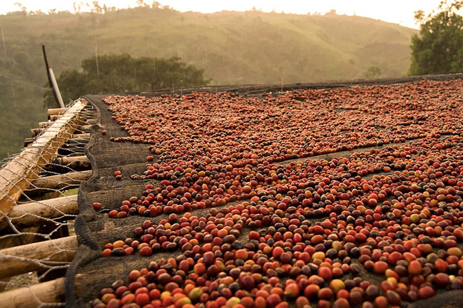

Tentang Kami
Toko Kopi Udin menyediakan kopi robusta berkualitas yang berasal dari kawasan Gunung Slamet, Jawa Tengah. Kami menghadirkan kopi dengan cita rasa khas dan aroma yang nikmat.
Mengapa Memilih Kami?
- Original kopi tanpa campuran bahan pengawet
- Bersertifikat organik
- Dikerjakan oleh petani lokal
- Kualitas kopi selalu dijaga
Produk dan Daftar Harga
Berikut daftar produk Toko Kopi Udin:
| Produk | Ukuran | Harga | Stok |
|---|---|---|---|
| Mont Blank Gunung Slamet | 1 Cup | Rp15.000 | 20 |
| Kopi Robusta Gunung Slamet | 250 gram | Rp200.000 | 15 |
| Kopi Robusta Gunung Slamet | 520 gram | Rp500.000 | 10 |
Proses Pengolahan Kopi

Kopi kami diproses dengan memperhatikan kualitas biji kopi agar menghasilkan rasa dan aroma yang khas.
Video Tentang Kopi
Yuk, simak video berikut untuk mengenal lebih jauh tentang kopi!
Cara Pemesanan
- Pilih produk dan jumlah yang diinginkan.
- Hubungi kami melalui WhatsApp.
- Lakukan pembayaran.
- Pesanan akan segera dikirim.
Hubungi Kami
Jl. Raya Kaligua No. 10
Bumiayu, Jawa Tengah